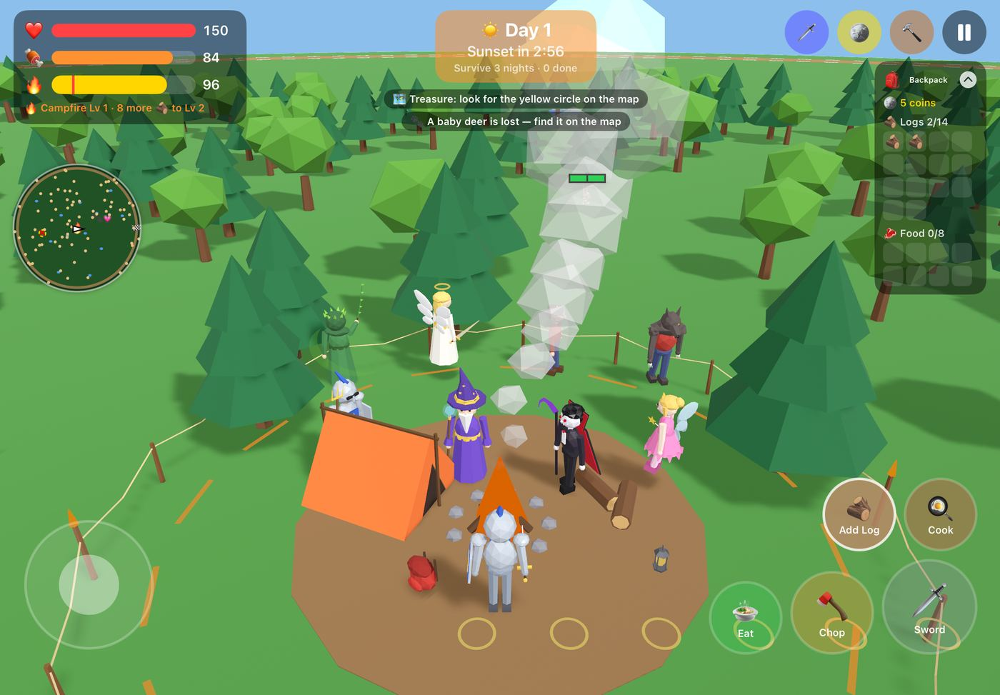
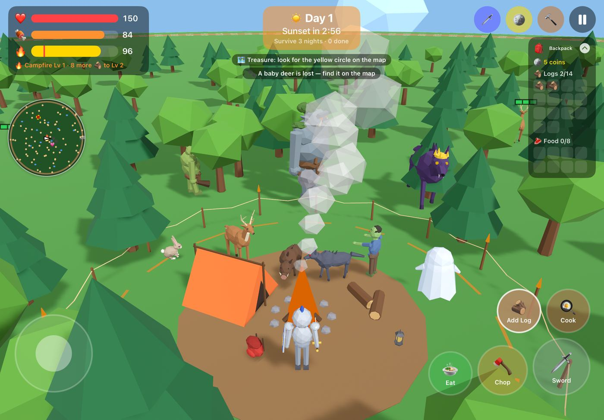
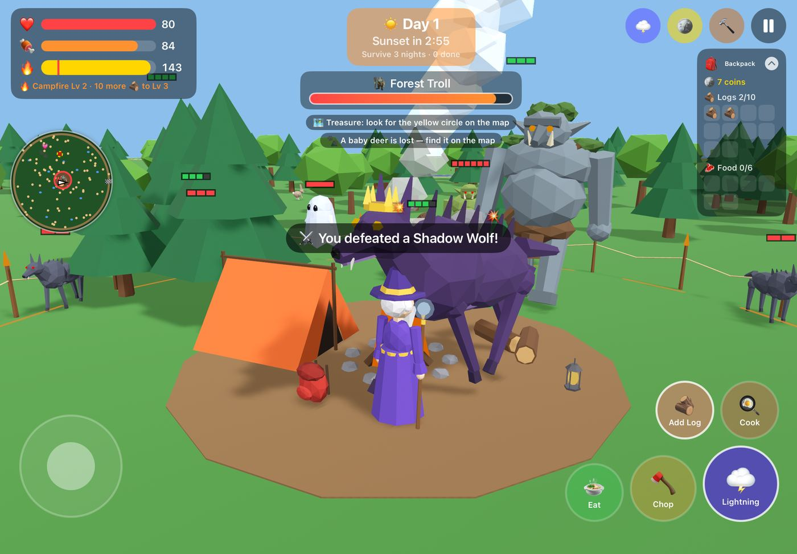
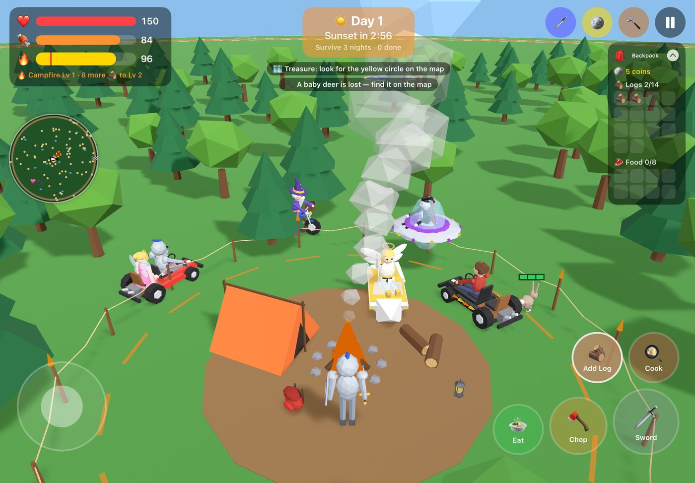
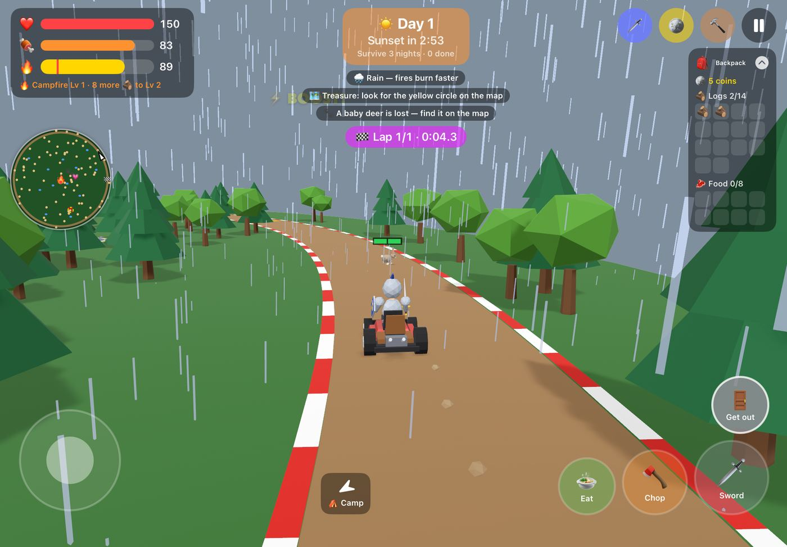
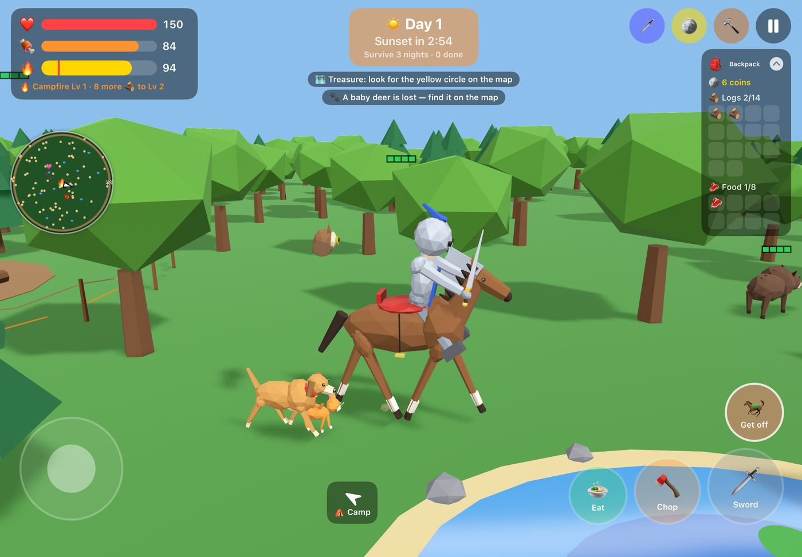
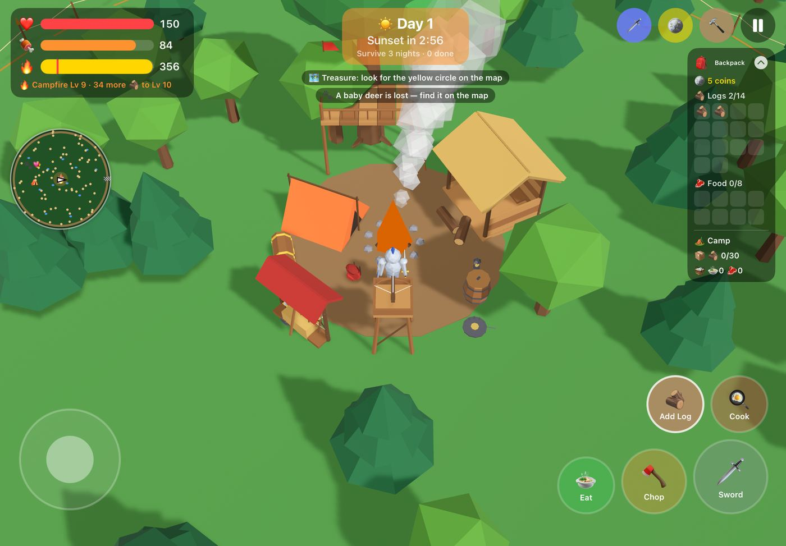
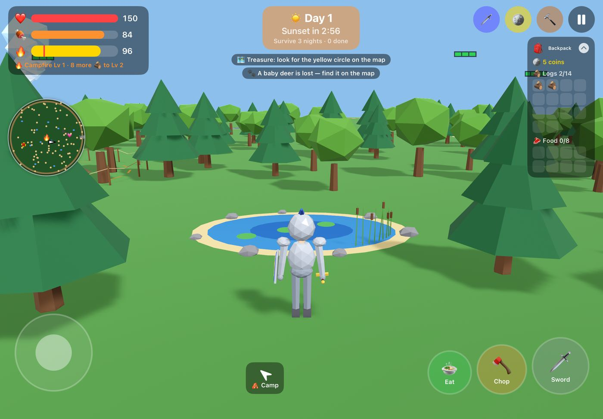
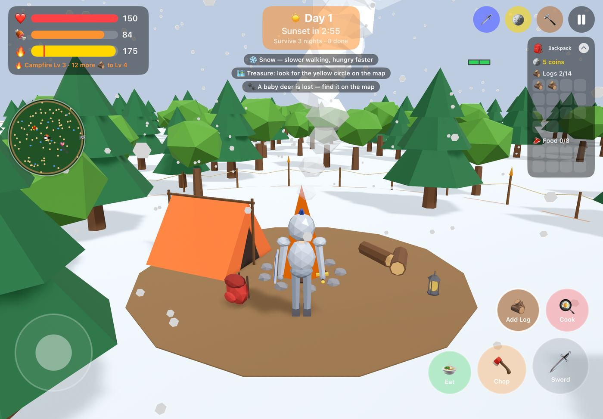

What it looks like
Straight from the game on an iPad, menus and all.









The same game underneath
The 3D app runs the 2D game's own engine for every rule: the seeded forest, monsters, fires, building, scores and co-op messages. On top of it, a RealityKit scene draws that world in 3D every frame. So everything on the 2D features page works exactly the same here, and 2D and 3D players can share a camp.
🎮Every 2D feature
Heroes, weapons, bosses, the Trading Post, mini-games, pets, achievements, Camp Score, saves and settings are all here, with the same numbers.
🔁Switch any time
Pause → 🧊 3D view flips between the new 3D look and the classic 2D view in the middle of a game.
🛠️Made in code
No 3D asset files: every hero, creature, building and effect is built from shapes in Swift when the game starts, in a faceted low-poly style.
Seven heroes, every weapon in hand
Each hero walks, swings, casts, claws, chops with an axe, flies (Fairy and Angel) and lies down when knocked out, following the game's own attacks so teammates see it too.
| Hero | In 3D |
|---|---|
| 🤺 Knight | Steel armour, visored helmet with a blue plume, blue tunic and a shield with a gold cross. |
| 🧙 Wizard | Purple robe, starry pointed hat, long white beard; staffs with glowing orbs. |
| 🧛 Vampire | Red-lined cape that flows when running, tall collar, red eyes and fangs. |
| 🧚 Fairy | Petal dress, see-through buzzing wings and a tiara; floats and dangles her feet. |
| 🌿 Druid | Green hood, crown of leaves and a vine belt; a twisted staff with a glowing orb. |
| 😇 Angel | Glowing halo, big feathered wings, golden hair and a shining blade. |
| 🐺 Werewolf | A villager in red flannel by day; a shaggy wolf-man with glowing eyes and claws at night. |
Every weapon you hold has a model in the hand (32 of the 41; bites, claws, bat swarms and howls are attacks without one): swords, battle axe, trident, crossbow, staffs, wands with stars, flowers and moons, whips, the Shadow Scythe, hammers, the Divine Chain and the Judgment scepter. The golden Night Guardian from the Trading Post is a big gold knight with a glowing blade.
Fourteen creatures that move like they mean it
They face where they're going and trot, hop, stomp, shamble or float in step with their speed. They squash and flash red when hit, lunge when they attack and topple over when beaten.
🦌Animals
- Rabbits that hop
- Deer with antlers that graze
- Boar with tusks and a bristly mane
- Today's lost baby animal and its mom, with ❓ / 😢 / ❤️ bubbles
🧟Monsters
- Shadow wolves with glowing red eyes
- Zombies, arms out, shuffling
- See-through glowing ghosts
- Ogres with tusks and a club
- Bosses: a giant mossy Forest Troll with a stone club, and a purple Shadow Wolf King with a gold crown
🐕Pets
- A golden dog with a wagging tail
- An orange tabby, tail up
- An owl with glowing eyes circling overhead
- A horse with a red saddle you can ride
- The Druid's bear
🟩Health bars
Blocks over every animal (green) and monster (red, with a level badge), one block per hit, like the 2D game. Bosses keep their big bar at the top.
A camp you can walk around
🔥The fire
Stones, a teepee of logs, glowing embers and flames that grow with every level. A column of smoke rises above the trees so you can find camp from far away; it thins to a wisp when the fire goes out. Leveling up shoots sparks into the sky.
🪢Camp boundary
A rope fence on stakes with little torches marks the edge of camp: as far as the fire's light can reach, and where you can build. The dashed glowing safe circle sits inside it and shrinks as the fire burns low.
🛖Buildings
- Thatched shed (the roof turns see-through while you're inside)
- Treehouse with a deck, railings and ladder
- Turret whose crossbow swings round and fires
- Log Chest and Food Barrel with lids that pop open
- Weapon rack, straw target range and bear traps
📐Placing
A see-through preview of the building on a green (fits) or red (doesn't) ring; it pops up out of the ground when built. Buildings and trees between the camera and you fade so you never lose your hero.
Climb in and drive
Every ride comes in all eight paint colours (Flame Black gets flame decals). Heroes sit with their hands on the wheel or handlebars and can still attack from the seat.
🏎️ Go-Kart
Steering wheel, side pods, twin exhausts and a back seat for a friend. Leans into corners and bounces when it rams a monster.
🏍️ Motorcycle
Fuel tank, chrome handlebars and a glowing headlight; the rider sits astride and leans hard into turns.
🚤 Speedboat
Windscreen and outboard motor; bobs on the ponds and lifts its nose at speed.
🛸 Spaceship
A flying saucer with a glass dome and spinning rim lights, hovering above everything.
The forest, the track and the sky
🌲Forest
1,300 low-poly pines and round trees from the same shared seed as the 2D game; chopped trees leave stumps with sprouts. Night closes in around a pool of light at your hero.
🎣Ponds
Twelve ponds with a deep middle, sandy shores, rocks, cattails and bobbing lily pads.
🏁Racetrack
A dirt ring round the forest with red-and-white curbs, a chequered start line under a banner, and pulsing boost-pad arrows pointing the racing way.
🌦️Weather
- 🌧️ Rain falls around you, the sky greys and the grass darkens
- ❄️ Snow drifts down and whitens the ground
- 🌫️ Fog: a white haze, clear only around you
Every hit, spell and heal, in 3D
⚔️Weapons
Glowing slashes, fireballs that light up the night, arrows, ninja stars, bats and bees, ice shards, chain lightning, flower-bomb bursts, howl rings and a meteor that falls from the sky.
💚Healing and revives
Green (Druid) and gold (Angel) healing pulses with rising sparkles; a spiral of gold sparkles when someone gets back up.
💥Big moments
The Troll's ground slam sends a dust shockwave and shakes the camera; the Wolf King howls a ring; treasure pops out of the ground as a golden chest; the screen edges flash red when you're hurt.
🔤Floating text
"+3 🪙", "BONK!", heal hearts and teammates' name tags float over the 3D world and stay readable at night.
Choose how you see it
Both are on the Pause screen.
🎥Camera
- Behind (default): from just behind your hero; the camera swings round as you walk and the joystick turns with it. Swipe across the right of the screen to look around.
- Close: lower and nearer, still facing north
- Top-down: the original high angle
✨Graphics
- Auto (default): picks Lite on older iPads like the 8th generation
- Full: sun shadows, the most trees, all effects
- Lite: no shadows, fewer far trees and creatures, less smoke and rain
3D and 2D in the same camp
🏕️Same Wi‑Fi
Up to 5 players, mixing 3D and 2D apps in one camp with the same emoji camp code. 3D players see each other's real weapons; 2D players don't notice the difference.
🌐Online
Game Center invites work 3D to 3D. Online play between the 2D and 3D apps needs both in one Game Center group, which goes in once 2D version 1.0 is live.
Status
Everything above is built, checked on the 8th-gen iPad, installed on the family's devices and on TestFlight (build 2). Backed up to a private GitHub repository: 37 Swift files, about 19,200 lines, 4,800 of them for the 3D view.
Apple's TestFlight review for outside testers, and the Game Center group for online 2D↔3D play (after 2D 1.0 is approved).
The Game Center group and 2D 1.0.1, then App Store screenshots and a first release of the 3D app.